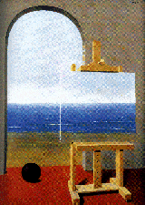

Alex David Groce's Home Page

"But that night, after the bonfire and the fireworks had faded, a wind
grew and blew with gathering violence, blowing away the rain. And in the
morning I found one of the laurelled posts torn off and lying at random on
the rainy ground; while the other stood erect, green and glittering in the
sun. I thought that the pagans would certainly have called it an omen; and
it was one that strangely fitted my own sense of some great work half
fulfilled and half frustrated. And I thought vaguely of that man in
Virgil, who prayed that he might slay his foe and return to his country;
and the gods heard half the prayer, and the other half was scattered to
the winds. For I knew we were right to rejoice; since the tyrant was indeed
slain and his tyranny fallen forever; but I know not when we shall find
our way back to our own land."
- G. K. Chesterton
Rene Magritte: La condition humaine, 1935
As the Associate Editor for Software Testing for IEEE Software magazine, I am always interested in article proposals. I am particularly interested in articles focusing on practical tools for test generation or debugging, e.g., applying security fuzzers to test "normal" code in systems, or using "research" techniques such as mutation testing in an industrial setting.
I am accepting PhD students to my software testing research group
at Northern Arizona University (for Spring 2022). Please send resumes and cover letters to Alex.Groce@nau.edu. IMPORTANT NOTE: please do not send unless you have significant research interest in software testing specifically (I don't want people who are simply looking for a place to do a PhD, I want students interested in and aware of the field: if you submit a "random" application, I will likely just ignore it). In particular, bring either experience in testing in industry (with knowledge of code coverage measurement) or background in software engineering or programming languages as an undergraduate (research experience, ideally). Funding is available for good candidates. Python skills and statistical savvy a plus.

What I actually do...
GitHub Profile
Comments and questions to
agroce@gmail.com.
Coda:
That day the stone edifices, the aged halls, oppressed me. Their
weathered hides seemed to me not beautiful, as usual, but hideous.
"The weight of history. I sometimes wonder why the past doesn't
just crush us all."
John stopped walking, forcing two old women in blue hats to go around
us. "Air."
"What?"
He looked up into the sky, squinting at the sun. "The past is like
air. Do you know how much a cubic foot of air weighs?"
"No. What are you talking about?"
"It weighs a little over a tenth of a pound. From you to the top
of the sky, there are sixty miles of atmosphere. Sixty miles times five-
thousand feet times one tenth comes out over thirty-thousand pounds.
Maybe sixteen tons. But it doesn't crush you, does it?"
"No. Air weighs a tenth of a pound? I didn't think air weighed
anything."
"Look it up. It doesn't crush you because it's distributed evenly,
and the pressure under you becomes the same. That's why the past doesn't
crush you--it spreads out--instead of crushing you, it lets you breathe.
Without it, you'd die."
I thought about the song:
You load sixteen tons and what do you get?
Another day older and deeper in debt
"Air or the past?"
"Either. Actually, there's another similarity: pollute the air
enough and you'll die choking. A similar rule applies to the past." Having
answered my question to his satisfaction, he began to walk again. I
followed, and neither of us said anything else until we reached St. Benet's.
I long ago lost a hound, a bay horse, and a turtle-dove, and am still on their trail.